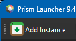

Hey! Want to join our Minecraft server? Follow these steps:
Go to CurseForge Download and install the launcher.
Open the CurseForge launcher, click on "Create Custom Profile", then click "Import" and choose the downloaded zip file.
Start the modpack and add the server using the following address:
your.minecraftserver.com
You’re ready to join! If you have any issues, hit me up.